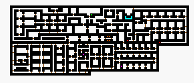

 |
| Nork -3 |
| Back to Nork -2. |
| Green Hex are stairs to Nork -2. Left Red Hex leads to Nork -4 at Hole drop in from surface. Right Red Hex are stairs down to Nork -4 by RatBurrow. MummyKing can be found here behind a locked door. Find a key on a random kill. Tan the MummyKing for a thief cloak. |
| Back to Nork. |
| To Nork -3.5. |